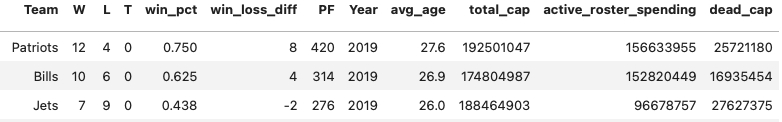
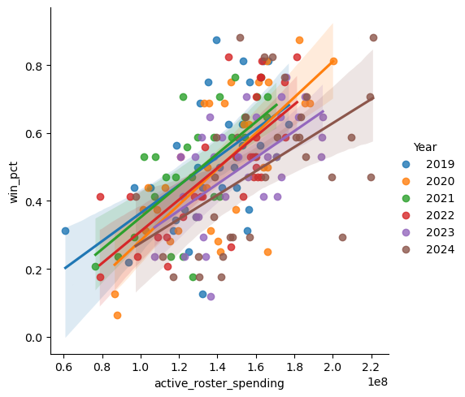
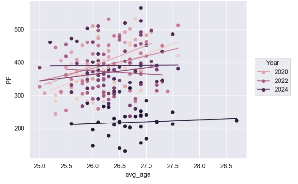
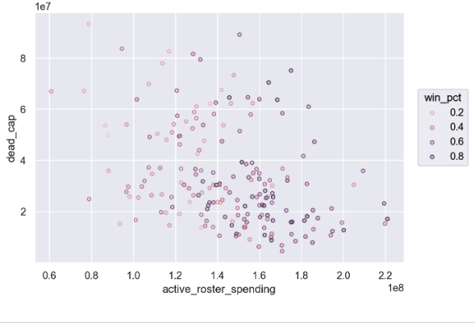

Data Acquisition Project
Salary Cap Spending and Team Performance in the NFL

Introduction
For my project, I wanted to look at NFL spending, in terms of total cap (the teams entire spending), dead cap (spending on players no longer on the active roster), and active roster spending (spending specifically for players on the 53 man roster), and how these numbers relate to performance metrics such as wins per game and total scoring production. I choose this topic because I am very interested in the NFL and I wanted to see if the amount of money a team spent had a noticeable impact on that team’s success. This information would also be valuable for teams that were curious about how their spending relates to other teams spending.
Questions of Interest:
- How much of an impact does active roster spending have on a team’s regular season win percentage?
- How has NFL spending change in the last 7 seasons (2019-2025)?
- Does a team’s average age have an impact on their scoring production?
- How much does dead cap (essentially wasted money) hurt a team’s active roster spending and win percentage?
Data Ethics
After reading through the terms and conditions of both of my data sources, I confirmed that my usage of the data was ethical. Both websites approved of downloading their data in the form of csv files so long as the usage is purley educational and doesn’t either any competitive or commercial benefit.
Getting the Data
- Pro Football Reference:
This source has many tables with data for each NFL season. There is an option to convert each table into the csv format. Then you have to create an empty csv file and paste the data into it. I did this for each season then used a for loop in python to combine the csv files. Once they were all combined I cleaned and prepared the data for analysis.
- Spotrac
This source did not have an option to download, however they did approve of copying/downloading their tables so long as it was not scraped from the HTML nor used commercially. For each season, I copy and pasted the table into an excel file and converted it into a csv file. I then used a for loop to combine all the csv files, each with a distinct year. I then cleaned this data.
- Putting it together
I merged the datasets by Team and Year after they had been cleaned and prepared.
EDA highlights
Table Summary

This Image shows a summary of the data. The data contains the variables PF (points scored in a season), win_pct (win percentage), avg_age (average player age per team), and the other variables mentioned in the introduction. There is a total of 224 observations.
Relationship between Active Roster Spenidng and Win Percentage (excluding 2025)

This graph shows the relationship between win percentage and how much a team is paying their roster over the last 6 seasons (2019-2024). We can see that there is a slight positive relation that varies slightly season by season. Overall, teams that are willing to spend more to acquire more talented players do tend to see benefits in terms of the team’s winning percentage.
Total Cap by Team over the last 7 seasons

This plot shows team’s total spending over the last 7 seasons (2019-2025). Team spending has increased significantly in just the last 7 seasons. It would be interesting to look at how much of this is due to inflation and how much can be attributed to increased NFL revenue.
Age and Offensive Production

This graph shows the imapct between a team’s average age and their production in terms of points scored by year. Interestingly, we can see that in earlier seasons (2019-2021) it appears there actually was a slight positive relationship between an increase in average age and the amount of points a team scored that year. However, it appears this effect has disappeared in recent years (2022-2025). It would be interesting to take a deeper look and try and identify possible causes for this.
Impact of Dead Cap on Active Spending and Win Percentage

This plot shows the realtionship between a teams dead cap spending and there active roster spending. As one would expect there is some negative relationship between dead cap and active roster spending. Seeing that the darker spots also trend more towards the bottom of the graph, we can also infer that dead cap spending can also hurt a teams win percentage as their spending becomes more limited.